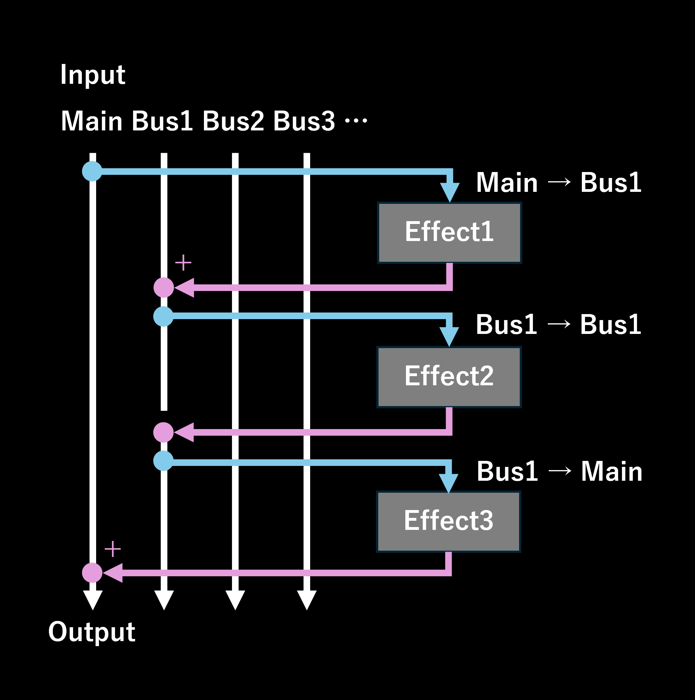

バス機能の使い方
バス機能により、エフェクト間で柔軟なオーディオルーティングが可能となり、より複雑で多彩なオーディオ処理が実現します。
基本概念
各エフェクトは、処理されるオーディオ信号を受け取る Input Bus（入力バス）と、処理後のオーディオを出力する Output Bus（出力バス）を指定できます。
特に指定がなければ、各エフェクトはデフォルトで Main bus（メインバス）を入力および出力に使用します。
最大で4つの追加バス（Bus 1 から Bus 4）を使用することができます。

エフェクトの入力および出力バスの設定
各エフェクトに表示されている上下ボタンの左側にある Routing button（ルーティングボタン）をクリックします。
ルーティングボタンをクリックすると、設定ダイアログが開き、MainまたはBus 1からBus 4までの中から自由に入力バスと出力バスを選択できます。
変更は即座に反映されます。
ダイアログを閉じるには、右上の×ボタンをクリックするか、ダイアログの外側をクリックします。
入力または出力のいずれかがBus 1以上に設定されている場合、ルーティングボタンの横に「Bus X→Bus Y」と表示されます。
例：Bus 2からオーディオを処理し、Bus 3へ出力する場合、「Bus 2→Bus 3」と表示されます。
オーディオ処理の仕組み
エフェクトは上から下へと順番に処理されます。
各エフェクトは、指定された入力バスからオーディオ信号を受け取り、処理した結果を出力バスに送ります。
入力バスが初めて使用される場合、処理は無音状態から開始されます。
入力バスと出力バスが同じ場合、出力バスのオーディオは処理結果によって上書きされます。
異なるバスが指定されている場合、処理済みのオーディオが出力バスに追加されます。
最終的に、オーディオの再生は常に Main bus から行われます。